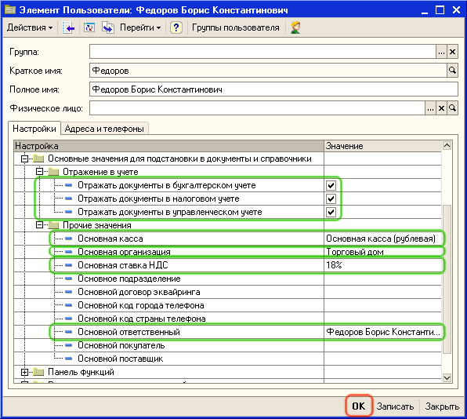

Для быстрого оформления документов при продаже и покупке товаров необходимо установить по умолчанию те параметры, которые обычно одинаковы для всех документов - организацию, от имени которой будет оформляться документ, склад на который будет производиться поступление и с которого будет производиться отгрузка товаров и т.д.
1. Откройте пункт меню Сервис - Настройки пользователя. В группе настроек Основные значения для подстановки в справочники и документы заполните значения настроек так, как это показано на рисунке:

2. Для правильного оформления документов при ведении взаиморасчетов с клиентами в валюте, в программе должны быть актуальные курсы валют. Для того, чтобы актуальные курсы валют загружались автоматически при запуске системы в настройках пользователя в группе Другие настройки установите флаг Загружать актуальные курсы валют при запуске системы.
Следующий раздел: «Ввод остатков денежных средств на расчетных счетах торгового предприятия»